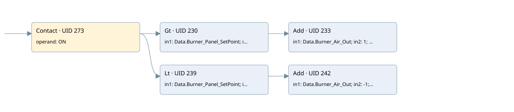

delayed burner flow rate variation
cyc_int2 ogni 1s · 검색 색인 순서 6 · 원본 내부 NID 추정 5
백업 PLF 원본의 3031189 바이트 위치에서 복원한 XML. 검색 문서 1724의 객체 키 161022003e62000000000000와 연결했다. 이름 해석 11/11개. 남은 RefId는 상수 또는 미해석 참조다.
연결 구조 다시 그리기
원본 Part/PCon/Wire를 이용한 연결도다. TIA 화면의 래더 배치 또는 실행 결과를 재현한 그림은 아니다. 핀 연결은 아래 표와 원본 XML을 기준으로 읽는다. 노드 위에 마우스를 두면 피연산자 이름을 볼 수 있다.

접점·코일·블록과 피연산자
| Part UID | Gate | Negated 핀 | 연결 피연산자 |
|---|---|---|---|
| 273 | Contact | operand = ON | |
| 230 | Gt | in1 = Data.Burner_Panel_SetPoint; in2 = Data.Burner_Air_Out | |
| 233 | Add | in1 = Data.Burner_Air_Out; in2 = 1; out = Data.Burner_Air_Out | |
| 239 | Lt | in1 = Data.Burner_Panel_SetPoint; in2 = Data.Burner_Air_Out | |
| 242 | Add | in1 = Data.Burner_Air_Out; in2 = -1; out = Data.Burner_Air_Out |
접점 경로를 펼친 조건식
Contact·O/A·비교기의 원본 연결을 읽기 쉽게 펼친 보조 해석이다. POWER는 전원 레일 시작을 뜻한다. 호출 블록·에지·타이머의 내부 동작과 다중 쓰기 순서는 이 표로 실행 검증하지 않았다. 미해석 핀과 RefId는 원문 연결표에서 확인한다.
| UID | 동작 | 대상 | 원본 접점 경로 | 내용 |
|---|
원본 배선 연결
| Wire UID | 동일 Wire 연결 끝점 |
|---|---|
| 275 | Powerrail {} ↔ Part 273.in |
| 257 | ORef 246 (ON) ↔ Part 273.operand |
| 274 | Part 273.out ↔ Part 230.pre ↔ Part 239.pre |
| 258 | ORef 247 (Data.Burner_Panel_SetPoint) ↔ Part 230.in1 |
| 259 | ORef 248 (Data.Burner_Air_Out) ↔ Part 230.in2 |
| 260 | Part 230.out ↔ Part 233.en |
| 262 | ORef 249 (Data.Burner_Air_Out) ↔ Part 233.in1 |
| 263 | ORef 250 (1) ↔ Part 233.in2 |
| 264 | Part 233.out ↔ ORef 251 (Data.Burner_Air_Out) |
| 265 | ORef 252 (Data.Burner_Panel_SetPoint) ↔ Part 239.in1 |
| 266 | ORef 253 (Data.Burner_Air_Out) ↔ Part 239.in2 |
| 267 | Part 239.out ↔ Part 242.en |
| 269 | ORef 254 (Data.Burner_Air_Out) ↔ Part 242.in1 |
| 270 | ORef 255 (-1) ↔ Part 242.in2 |
| 271 | Part 242.out ↔ ORef 256 (Data.Burner_Air_Out) |
식별자 해석 근거 11개
| ORef UID | RefId | 이름 | IdentXmlPart 파일 | 해석 방법 |
|---|---|---|---|---|
| 246 | 36 | ON | 0652-IdentXmlPart.xml | UID/RID + search-text + NID agreement |
| 247 | 6 | Data.Burner_Panel_SetPoint | 0650-IdentXmlPart.xml | UID/RID + search-text + NID agreement |
| 248 | 41 | Data.Burner_Air_Out | 0650-IdentXmlPart.xml | UID/RID + search-text + NID agreement |
| 249 | 41 | Data.Burner_Air_Out | 0650-IdentXmlPart.xml | UID/RID + search-text + NID agreement |
| 250 | 43 | 1 | 0649-IdentXmlPart.xml | literal candidate: UID/RID/NID + nearby named declarations + search-text agreement |
| 251 | 41 | Data.Burner_Air_Out | 0650-IdentXmlPart.xml | UID/RID + search-text + NID agreement |
| 252 | 6 | Data.Burner_Panel_SetPoint | 0650-IdentXmlPart.xml | UID/RID + search-text + NID agreement |
| 253 | 41 | Data.Burner_Air_Out | 0650-IdentXmlPart.xml | UID/RID + search-text + NID agreement |
| 254 | 41 | Data.Burner_Air_Out | 0650-IdentXmlPart.xml | UID/RID + search-text + NID agreement |
| 255 | 45 | -1 | 0649-IdentXmlPart.xml | literal candidate: UID/RID/NID + nearby named declarations + search-text agreement |
| 256 | 41 | Data.Burner_Air_Out | 0650-IdentXmlPart.xml | UID/RID + search-text + NID agreement |
검색 코드 보조 자료
참조 명칭을 찾기 위한 자료이며 실행 순서나 AND/OR 관계는 위 연결표로 확인한다.
"on" "data".burner_panel_setpoint "data".burner_air_out add "data".burner_air_out 1 "data".burner_panel_setpoint "data".burner_air_out add "data".burner_air_out -1 "data".burner_air_out "data".burner_air_out